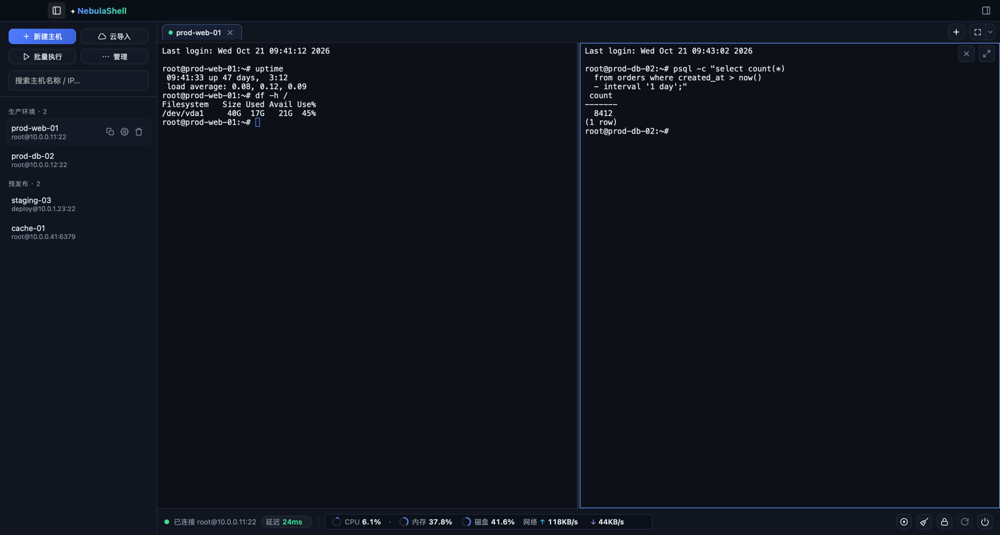
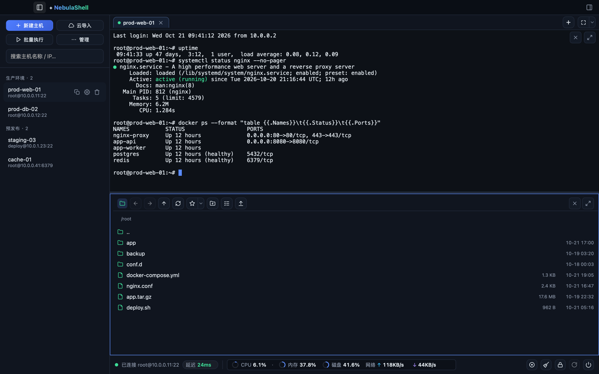

INTERACTIVE WORKFLOWS
三大核心工作流，身临其境的操作体验
无需在多个窗口与网页之间复制粘贴，一切都在同一个高效流中发生。
AI 不只是闲聊，它能接管你的繁杂巡检
当服务异常时，点击终端悬浮🔍或在右侧输入问题。AI 自动读取最后一条命令及其输出， 按步骤执行诊断命令并读回退出码，最后收口折叠为清晰结论。
手动逐条确认：每条要下发的命令都弹出卡片等待审批，安全底线永远由你把控。
- 自动过滤密码等敏感不回显输入
- 兼容 OpenAI 与 Anthropic，支持自填 API Key
- 思考强度调节（⌘T）与多会话抽屉隔离
已读取宿主机核心数为 8 核。推荐修改为自适应并扩大连接池：
worker_processes auto;
worker_connections 10240;改完执行 systemctl reload nginx 平滑生效，无需中断业务。
一个窗口下，操纵整个服务器集群
告别频繁在多个窗口间切来切去。支持自由拖拽调宽、垂直与水平自适应分屏，单窗格一键最大化。
集群广播模式：一条高危升级命令，同时向 10 台边缘机器下发。可在窗格工具条随时单机加入或退出广播，杜绝误操作。

像本地文件夹一样操作远程主机
文件管理不再是一个孤立弹窗，而是作为标签窗格与终端并列协作。支持目录星标书签、八进制权限原地编辑、断点续传。
- 传输任务中心：精确显示速率、剩余时间与中断取消
- 本地文件直接拖拽扔进窗格即刻上传
- 腾讯云 CVM / 阿里云 ECS 实例自动扫网导入

FULL-STACK CAPABILITIES
无死角的专业运维工具箱
每个细节都经过深思熟虑，专为消灭终端日常操作摩擦而设计。
免插件环境指标监控
直接解析 Linux /proc 统计数据，服务端零 Agent 安装、零依赖。
底栏直观呈现 CPU 负载、物理内存、磁盘 IO、网络吞吐以及 Ping 链路延迟，支持悬停查看全量数值。
多级跳板链与端口隧道
支持本地（L）、远程（R）、动态 SOCKS5（D）三类转发；多级 ProxyJump 自动化 direct-tcpip 串联穿透内网。
结构化纯文本会话日志
默认记录已回显的干净文本，每行带有 [hh:mm:ss] 时间戳。断线自动暂停、重连续录同文件，可直接用 grep 检索。
[09:41:12] systemctl restart nginx
[09:41:13] [OK] Started nginx service.
全局命令面板 (⌘⇧P)
中文、英文别名、拼音首字母均可搜索。随时输入 root@10.0.0.1:22 快速直连，无需预存配置。
云端资产一键同步
集成腾讯云 CVM / 轻量云，阿里云 ECS 官方鉴权。勾选即可批量导入，按厂商实例 ID 幂等去重。
凭据加密与指纹 TOFU
AES-256-GCM 算法保护私钥与密码，密钥由机器标识派生。首次连接记录指纹，指纹变更立即阻断连接。
BUILT FOR REAL-WORLD OPS
不仅仅是对话框，而是常驻终端的现场排查工程师
普通 AI 工具脱离实际操作系统，需要反复手工搬运报错；NebulaShell 的 AI 智能体直接贯通终端 PTY 执行流， 看得见输出、下得去命令、守得住安全底线。
原位上下文感知 · 告别手动搬运
Zero-Copy In-situ Diagnostic在终端里选中任意异常报错，选区上方立即浮出 🔍 解释 气泡；遇到疑难故障，终端右键直达 AI 诊断。 系统自动打包最后一条命令、退出码与 stderr 输出上下文，无需在终端与网页之间频繁切换复制粘贴。
三档权限控制 · 守牢生产防线
Three Execution Tiers & Safeguards执行权完全由你掌控： 手动逐条确认（默认审批每一条下发命令）、自动巡检执行（只读命令自动下发，修改与破坏类操作拦截）、 完全托管模式（自动化脚本交付）。遇到高危操作，系统主动模拟列出受影响进程 PID 与依赖包。
三大主机目标模型 · 伴随或集群
Chat / Follow / Multi-Target对话与目标主机架构解耦，灵活胜任三大场景： 纯对话 (Chat) 作为离线通用知识库； 伴随模式 (Follow) 跟随当前活动标签页，切到哪台主机上下文就绑定到哪台； 集群编排 (Multi-Target) 一次会话同时跨节点下发探测并比对环境差异。
过程折叠收口 · ⌘T 思考强度调节
Turn Folding & Reasoning Effort即使一轮排查执行了多步复杂命令，执行完毕后步骤行与命令回显自动折叠为一条极简摘要， 主视野只保留关键结论。配合 ⌘T 快捷键，随时调节关闭/低/中/高思考强度，深度适配 Claude 3.7、o1/o3 及 DeepSeek 推理模型。